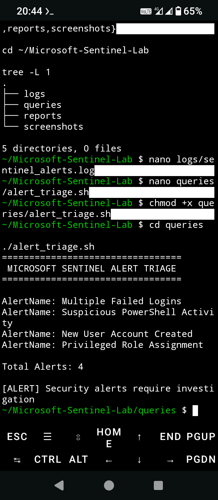
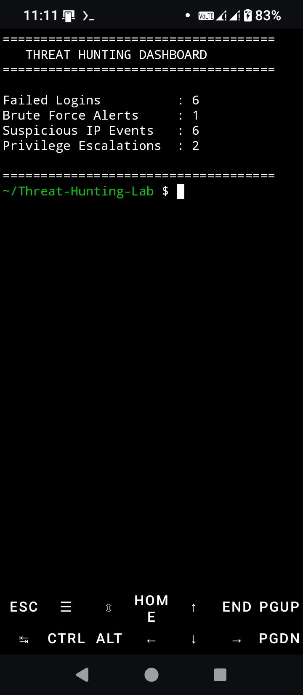
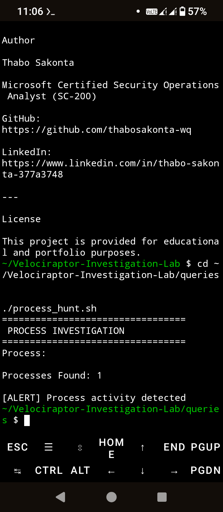
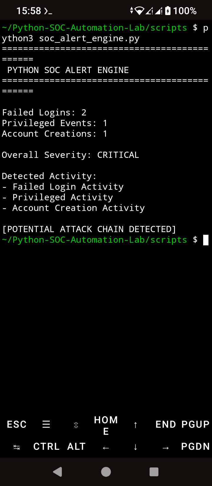
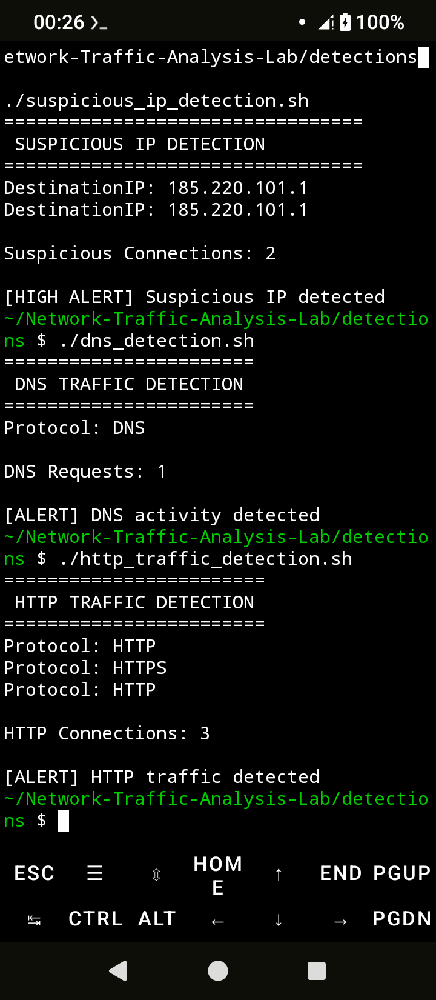
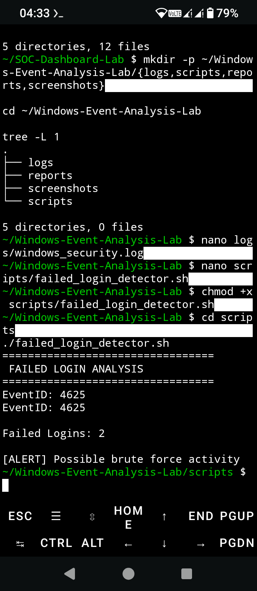
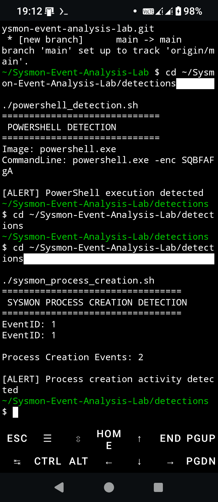
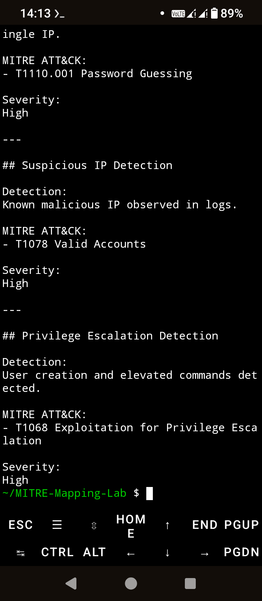
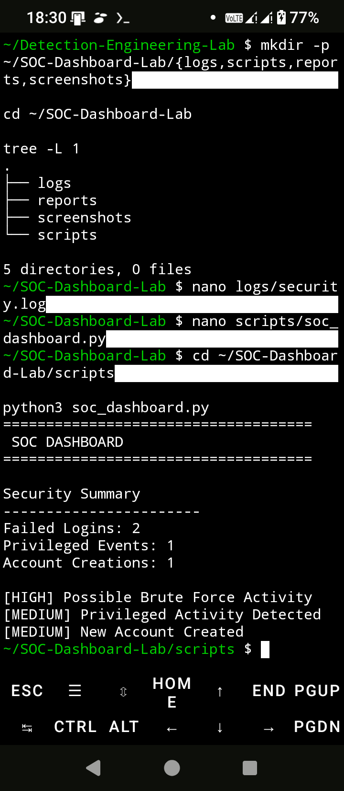

SOC Analyst Portfolio

Microsoft Sentinel Lab
SOC alert triage, incident investigations, KQL queries and MITRE ATT&CK mapping.
Technologies: Microsoft Sentinel • KQL • Azure • MITRE ATT&CK
View Project →
Detection Engineering Lab
Sigma rule development, detection logic and SOC analytics.
Technologies: Sigma • Bash • Detection Engineering
View Project →
Threat Hunting Lab
IOC hunting, behavioural analysis and MITRE ATT&CK mapping.
Technologies: Linux • Bash • MITRE ATT&CK
View Project →
Velociraptor Investigation Lab
Endpoint investigations, DFIR methodology and incident reporting.
Technologies: Velociraptor • DFIR • Windows
View Project →
Python SOC Automation Lab
Python automation scripts for SOC investigations and alert processing.
Technologies: Python • SOC Automation
View Project →
Network Traffic Analysis Lab
DNS, HTTP and suspicious network traffic investigations.
Technologies: Wireshark • tcpdump • Linux
View Project →
Windows Event Analysis Lab
Authentication investigations, event log analysis and DFIR workflows.
Technologies: Windows Event Logs • PowerShell
View Project →
Sysmon Event Analysis Lab
Endpoint telemetry analysis using Microsoft Sysmon.
Technologies: Sysmon • Windows • DFIR
View Project →
MITRE ATT&CK Mapping Lab
Threat classification and ATT&CK mapping for SOC investigations.
Technologies: MITRE ATT&CK • Threat Intelligence
View Project →
SOC Dashboard Lab
Security dashboards, monitoring, metrics and investigation workflows.
Technologies: Dashboard • SOC Metrics • Visualization
View Project →